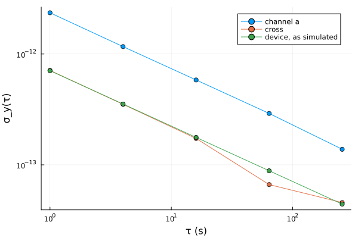

Two-channel measurements
A measurement of a device against a reference holds the noise of both, and that of the measuring channel. When the device is measured twice at the same time, through two channels or against two references, the two records share the device and nothing else. The average of their product keeps the shared part, and the rest averages toward zero. The method is the cross-spectrum in the frequency domain (Baudiquez et al., 2020) and the Allan covariance in the time domain (Vernotte et al., 2016).
Two arrangements use it:
- Two references. The device is measured against two references at once, which gives the records
a = device − ref1andb = device − ref2. The cross estimates show the device even where each reference is noisier than it. - Two channels. One signal is split into the two inputs of an instrument. The cross estimates show the source below the noise of each channel. The same reference in both inputs shows the floor of the instrument.
The cross Allan deviation
The example simulates a device with white FM noise against two references whose noise is ten times larger in power:
using SigmaTau, Random
N = 65536
wfm(h, seed) = noise_gen(FrequencyData, N, 1.0; h = Dict(:WHFM => h),
rng = Xoshiro(seed)).y
device, ref1, ref2 = wfm(1e-24, 2), wfm(1e-23, 3), wfm(1e-23, 4)
a = FrequencyData(device .- ref1, 1.0)
b = FrequencyData(device .- ref2, 1.0)
x = cross_adev(a, b, [1, 4, 16, 64, 256])
[x.tau x.dev x.dev_a]5×3 Matrix{Float64}:
1.0 7.10689e-13 2.35487e-12
4.0 3.51472e-13 1.16544e-12
16.0 1.72898e-13 5.83001e-13
64.0 6.63163e-14 2.90901e-13
256.0 4.5655e-14 1.38153e-13The second column is the cross Allan deviation and the third the Allan deviation of channel a alone, which its reference sets. The device was simulated at $σ_y(1\,\mathrm{s}) = 7.1 × 10^{-13}$, falling as $τ^{-1/2}$:
using Plots
plot(x.tau, [x.dev_a x.dev sqrt.(1e-24 ./ 2x.tau)]; xscale = :log10,
yscale = :log10, marker = :circle, xlabel = "τ (s)", ylabel = "σ_y(τ)",
label = ["channel a" "cross" "device, as simulated"])
cross_adev returns a CrossStabilityResult. Its covar is the cross Allan variance and dev the square root. uncertainty is the standard uncertainty of covar, which is also the level that two records with nothing in common would scatter about:
round.(x.uncertainty ./ x.covar; digits = 2)5-element Vector{Float64}:
0.05
0.08
0.15
0.49
0.51At 64 s and 256 s the uncertainty is half the estimate, which is a quarter of the deviation, and the point at 64 s lies that far below the simulated line. Where the uncertainty exceeds the estimate, the estimate can be negative: covar keeps the sign and dev is NaN. A longer record lowers the uncertainty as the inverse square root of its length.
The cross-spectrum
cross_psd_y and cross_psd_x do the same for the spectrum. They average the product of the two channels' transforms over the segments of Welch's method:
using Statistics
s = cross_psd_y(a, b; nperseg = 512)
band = 20:200 # 0.04 Hz to 0.39 Hz
s.nseg, mean(s.psd[band]), mean(s.psd_a[band]), mean(s.floor[band])(255, 1.048906095659286e-24, 1.1112334149585909e-23, 7.121560811032088e-25)Over the band the cross-spectrum reads the $10^{-24}$ per hertz of the device, where channel a alone reads $1.1 × 10^{-23}$. floor is the level that the unshared noise leaves after nseg averages. A bin whose psd is not well above it is not resolved.
The floor falls as the inverse square root of the number of segments, so the segment length trades resolution in frequency for depth. The default, a quarter of the record, gives 7 segments and a floor above this device. Give nperseg when the aim is to see below the channels.
What the method cannot remove
- Noise the channels share. A common reference, a common supply or the temperature of the room appears in both records and is counted as the device.
- Unequal timing. The two records must be simultaneous, with the same sample interval and length and no gaps.
fillgapsfills a record with gaps first.
With three devices compared in pairs, groslambert applies the same covariance to give each one its own deviation, and ncornered_hat does it from the three deviations. The tutorial Three clocks and the three-cornered hat works through both.
From the command line
sigmatau cross a.dat --with b.dat # cross Allan deviation, CSV
sigmatau cross a.dat --with b.dat --format json # adds the cross-spectrum--with names the second channel, which is read with the options of the first (Command line).